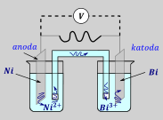
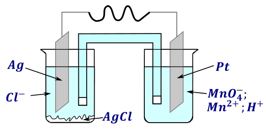
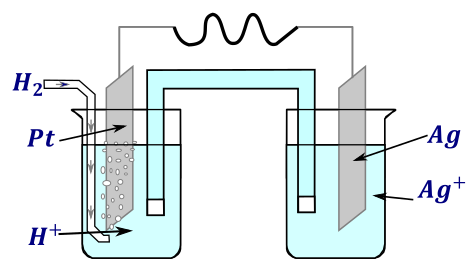
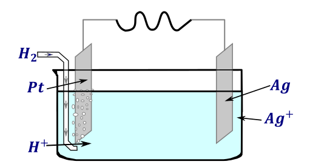
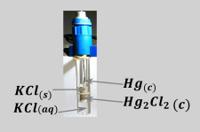

Zapis ten został wprowadzony z uwagi na lenistwo, aby nie było potrzeby rysowania za każdym razem schematu ogniwa. W zapisie tym wprowadza się następujące oznaczenia:
| - granica faz (stanów skupienia), granica roztworów
|| - klucz elektrochemiczny w którym nie znamy elektrolitu. Jeżeli znasz elektrolit to zapisujemy go pomiędzy kreskami pionowymi: |elektrolit|
, - związki po przecinku są w jednej fazie (w praktyce roztwór –jony w jednym roztworze bądź stop metali)
Ogniwo piszemy od zawsze anody do katody, nijako startując z blaszki i będąc jonem przemieszczającym się do katody

Widzimy, iż blaszka niklowa jest anodą (ma niższy potencjał), natomiast blaszka bizmutowa jest katodą. Startując od blaszki niklowej i chcąc się dostać do katody poruszamy się przez roztwory w następującej kolejności: na początku jesteśmy blaszką niklową, potem stajemy się jonem \(Ni^{2 +}\) w roztworze po stronie anody. Jon oczywiście jest w innej fazie niż blaszka, co zaznaczam stawiając symbol | pomiędzy nimi. Kolejno muszę przejść przez klucz elektrochemiczny o nieznanej substancji rozpuszczonej, co zaznaczam przy użyciu ||. Następnie muszę dostać się do roztworu katodowego – gdzie staję się jonem bizmutu \(Bi^{3 +}\) , który kolejno osadza się na blaszce zbudowanej z bizmutu. Stawiam między jonem metalu i blaszką symbol |,gdyż znajdują się one w innej fazie. Opcjonalnie zaznaczam gdzie jest katoda i anoda, wraz z ładunkami. Postać w konwecji sztokholmskiej wygląda następująco:
\[A( - )\ \ \ Ni\left| Ni^{2 +} \right|\left| Bi^{3 +} \right|Bi\ \ \ \ K\ ( + )\]
Przypadku występowania gazów, ciał stałych czy inne rzeczy, które reagują w reakcji połówkowej należy je wszystkie wymienić z zaznaczeniem fazy, w której dana drobina występuje w półrównaniu. Dodatkową, nieoczywistą zasadą wymieniania jest, że jony znajdujące się w roztworach MUSZĄ zostać zapisane przy kluczu , natomiast raczej oczywistą jest to, że anoda i katoda to blaszki, a więc należy je zapisać na początku i na końcu tegoż zapisu. Inaczej można powiedzieć, że przy wymienianiu roztwór elektrolitu musi sąsiadować z kluczem.

Kolejność wymieniania jonów znajdujących się w jednym roztworze nie ma znaczenia, powinny one być wymienione po przecinku. Blaszkę nieuczestniczącą w reakcji elektrodowej również należy wymienić, gdyż, mimo że nie bierze ona udziału w reakcji, doprowadza lub odbiera ona elektrony, a więc jest kluczowa z punktu widzenia budowy ogniwa. W związku, z czym w schemacie powyższego ogniwa blaszkę platynową musimy napisać o tyle, że ona, choć nie reaguje, to robi za dostawcę / odbiorcę elektronów. Zapis w konwencji sztokholmskiej przedstawionego ogniwa wygląda następująco:
\[Ag(to\ pierwsze\ bo\ blaszka)|AgCl|\mathbf{C}\mathbf{l}^{\mathbf{-}}\mathbf{\ (a\ to\ musi\ sąsiadować\ z\ kluczem)|}\left| \mathbf{Mn}\mathbf{O}_{\mathbf{4}}^{\mathbf{-}}\mathbf{,}\mathbf{H}^{\mathbf{+}}\mathbf{,M}\mathbf{n}^{\mathbf{2 +}} \right|Pt\]
Blaszkę platynową stosujemy, jako dogodne źródło elektronów, gdyż platyna jest niereaktywna, a więc nie powinna roztworzyć się w roztworze
\[Ag|AgCl|Cl^{-}||MnO_{4}^{-},H^{+},Mn^{2 +}|Pt\]

W przypadku półogniwa z reagentem gazowym możemy zastosować dwa zapisy, pierwszy przedstawia półogniwo, w którym wodór nie był całkowicie rozpuszczony w roztworze (tak jak na rysunku)
\[Pt\left| H_{2} \right|H^{+}|\left| Ag^{+} \right|Ag\ \]
Natomiast drugi przedstawia sytuację, w którym wodór rozpuścił się całkowicie w roztworze; wydaje się, że matura woli ten „rozpuszczony” zapis.
\[Pt|H_{2},\ H^{+}|\left| Ag^{+} \right|Ag\ \]
W przypadku zastosowania ogniwa bez klucza elektrochemicznego, w którym mamy jeden roztwór zawierający jony uczestniczące w obu półreakcjach, jak np. przedstawiono na schemacie:

Powinniśmy jony te zapisać po przecinku, bez symbolu ||, który symbolizuje klucz elektrochemiczny.. Kolejność zapisu jonów jest dowolna:
\[Pt\left| H_{2} \right|H^{+},\ Ag^{+}|Ag\ \]
Możemy mieć również potrzebę ustalenia półreakcji i reakcji elektrodowych mając schemat ogniwa zapisany w konwencji sztokholmskiej. Ogólna metoda ustalenia półreakcji polega na rozdzieleniu ogniwa na dwa półogniwa, kolejno użyciu reagentów z jednej strony klucza i ustaleniu na ich podstawie półreakcji redoks zachodzącej w danym półogniwie. Rozważmy półogniwo:
\[Ag|AgCl|Cl^{-}||MnO_{4}^{-},H^{+},Mn^{2 +}|Pt\]
W tym wypadku omawiana metoda polega na zapisaniu półreakcji redoks, używając tych reagentów, które występują z lewej strony równania: \(Ag;AgCl;Cl^{-}\) dla lewego półogniwa (czyli anody, a więc reakcji utlenienia)
\[Ag + Cl^{-} \rightarrow AgCl + e^{-}\]
I analogicznie dla prawej elektrody używamy reagentów znajdujących się z prawej trony od klucza: \(MnO_{4}^{-},H^{+},Mn^{2 +}\)
\[MnO_{4}^{-} \rightarrow Mn^{2 +}\]
\[MnO_{4}^{-} + 8H^{+} + 5e^{-} \rightarrow Mn^{2 +} + \ 4H_{2}O\]
Jest duża szansa, że te półreakcje znajdują się wymienione w tablicy potencjałów, a więc możemy je sprawdzić lub nawet odnaleźć zamiast ustalać półreakcją redoks.
Po ustaleniu lub odnalezieniu półreakcji powinniśmy sprawdzić, czy rzeczywiście na anodzie jest utlenianie (inaczej dla półogniwa po lewej stronie elektrony powinny być po prawej w półreakcji), a na katodzie redukcja (a dla półogniwa po prawej stronie elektrony powinny być po lewej), jeżeli jest inaczej to jedną lub obie półreakcje należy odwrócić, tak, aby kierunki się zgadzały.
Chcąc zapisać jedno półogniwo w zapisie sztokholmskim traktujemy je jak anodę, tzn. blaszkę zapisujemy po lewej stronie, a po prawej jony. Przykładem jest zadanie z matury:
Jako elektroda odniesienia w opisanym miareczkowaniu potencjometrycznym może być zastosowana tzw. nasycona elektroda kalomelowa.

Schemat tej elektrody przedstawiono poniżej:
\[Hg|Hg_{2}Cl_{2}(s),\ KCl(roztwór\ nasycony)\]
Zasada działania tej elektrody jest taka sama jak elektrody chlorosrebrowej.
Pomijając, że zapis poprawny tej półreakcji to
\[Hg|Hg_{2}Cl_{2}|KCl\]
bo raczej \(Hg_{2}Cl_{2}\) nie jest rozpuszczony w wodzie, a więc wystąpił błąd na maturze;).